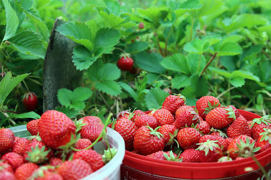
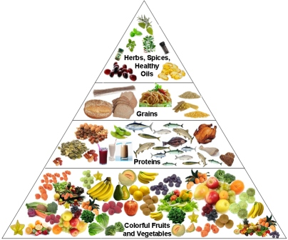

🍎 Welcome to Fresh Fruits Guide
Fresh Fruits Guide is designed to help you discover different types of fruits, their nutritional value, health benefits, and simple recipes. Whether you enjoy tropical fruits or berries, this website provides useful information that can help you make healthier food choices every day.
Explore each section to learn about delicious fruits, compare their nutrients, prepare healthy recipes, and share your own favorite fruit.

🌴 Tropical Fruits
Learn about mangoes, pineapples, bananas, papayas, and coconuts. Discover where they grow, their nutrients, and why they are good for your health.
Explore →
🍓 Berry Fruits
Explore blueberries, strawberries, raspberries, and blackberries. These colorful fruits are rich in antioxidants, vitamins, and fiber.
Explore →
🥗 Nutrition
Compare calories, Vitamin C, fiber, and the health benefits of different fruits using an easy-to-read nutrition table.
Learn More →
🍹 Healthy Recipes
Try delicious fruit salads, smoothies, and yogurt parfaits that are simple to prepare and perfect for a healthy lifestyle.
View Recipes →🌱 Why Eat Fruits?
Fruits provide essential vitamins, minerals, fiber, and antioxidants that support heart health, improve digestion, strengthen immunity, and provide natural energy throughout the day.